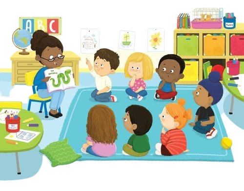

Petualangan Seru di Dunia Informasi dan Media Sosial

Hai, teman-teman! Kalian tahu nggak, sekarang ada tempat ajaib yang
disebut "informasi" dan "media sosial" di dunia maya! Ceritanya,
informasi itu seperti petualangan seru di alam pengetahuan. Kita
bisa menemukan banyak hal menarik, seperti cerita-cerita seru,
fakta-fakta menakjubkan, atau pesan-pesan penting yang ingin
disampaikan.
Bayangkan jika informasi itu adalah peta rahasia yang bisa membawa
kita berpetualang ke berbagai tempat di dunia pengetahuan. Kita bisa
menjelajahi gunung tinggi yang penuh dengan cerita-cerita dongeng,
hutan lebat yang menyimpan fakta-fakta menarik, atau lautan luas
yang penuh dengan pengetahuan baru.
Nah, sekarang mari kita berkenalan dengan media sosial. Media sosial
itu seperti panggung ajaib di mana kita bisa tampil dan berinteraksi
dengan banyak teman. Di panggung ini, kita bisa menjadi bintang!
Kita bisa berbagi cerita-cerita seru, foto-foto lucu, atau
video-videomu yang keren dengan semua orang di seluruh dunia. Keren,
kan?
Jadi, bagaimana hubungan antara informasi dan media sosial? Nah,
bayangkan media sosial sebagai sayap ajaib yang membantu informasi
terbang ke berbagai tempat. Misalnya, jika kamu menemukan berita
penting atau cerita seru, media sosial akan membantu mengirimkannya
dengan cepat ke banyak teman. Informasi akan terbang jauh, sampai ke
teman-temanmu di berbagai belahan dunia!
Namun, ingat ya, di panggung media sosial ini, kita perlu
berhati-hati. Karena di dunia maya, informasi juga bisa bersembunyi
di balik topeng palsu. Kita harus jadi detektif kebenaran! Pastikan
informasi yang kita terima dan bagikan adalah benar dan bermanfaat.
Kita juga perlu menghargai privasi dan sikap baik saat berinteraksi
dengan teman-teman di media sosial.
Jadi, informasi dan media sosial itu seperti petualangan seru dan
panggung ajaib yang membantu kita berbagi cerita dengan teman-teman
di seluruh dunia. Mari kita menjaga keceriaan dunia informasi dengan
memilih informasi yang baik, membagikannya dengan bijak, dan selalu
menjadi pahlawan kebenaran di dunia maya!
Semoga cerita ini membantu kamu memahami dunia informasi dan media
sosial dengan lebih menyenangkan, ya!